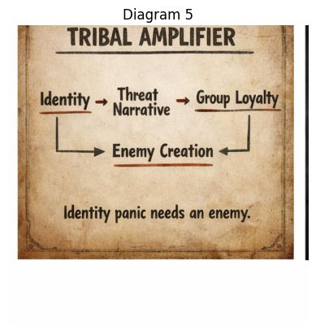

How identity becomes amplified into conflict.
This diagram shows how identity becomes amplified into conflict.
Earlier diagrams showed panic and algorithms. This one zooms in on group psychology. It explains how identity can turn into a system that manufactures enemies.
Think of it like a speaker amplifier. 🎛️
Identity is the signal. A threat narrative increases the volume. Soon the sound becomes loud enough to drown out nuance.
Identity is the starting point.
Identity can be many things:
Identity itself is not a problem. It provides belonging, meaning, and community.
But identity becomes volatile when it is framed as fragile or under attack.
A threat narrative tells the group that something important about their identity is endangered.
Examples might sound like:
The narrative may contain partial truths, exaggerations, or selective framing.
What matters is the emotional message: Your identity is in danger.
This activates protective instincts.
Once a threat narrative spreads, group loyalty intensifies.
Members of the group begin signaling commitment by:
Loyalty becomes a way of proving belonging.
The stronger the perceived threat, the stronger the loyalty pressure becomes.
Once loyalty is mobilized, the system naturally defines an enemy.
The enemy might be:
The enemy simplifies a complicated world into a clear story:
Our group vs. the threat.
This makes mobilization easier, but it also hardens divisions.
Notice the arrows feeding toward Enemy Creation.
Both identity and loyalty push toward defining an opponent.
Once an enemy exists, the threat narrative becomes easier to maintain.
Every action by the opposing side can be interpreted as proof of the original danger.
The amplifier gets louder.
Identity panic needs an enemy.
This is the core insight.
Panic about identity becomes unstable if there is no clear opponent.
Without an enemy, the narrative loses emotional force.
With an enemy, the story becomes powerful and self-reinforcing.
Identity Panic Toolkit focuses on recognizing when identity is being weaponized.
The goal is not to erase identity, but to notice when identity is being used to amplify fear and hostility.
When people step back from enemy narratives, the amplifier loses its power.
The conversation can shift away from tribal conflict toward shared understanding.